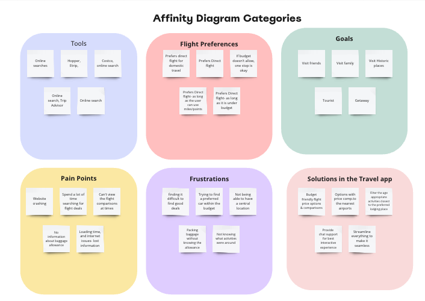
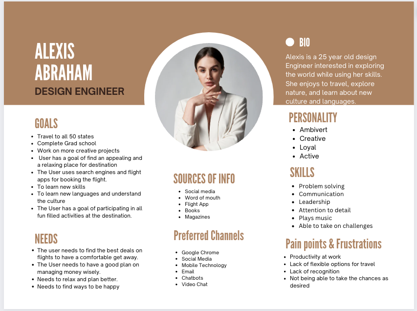
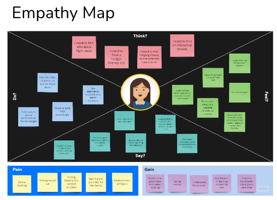
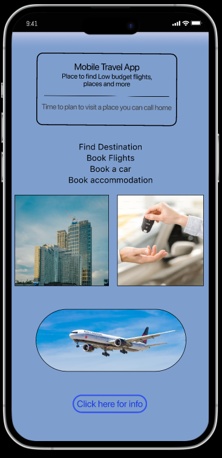

Executive Summary: Creating a user-friendly travel app with multiple features can prevent users from losing out on opportunities.
Project Overview:
In this research project, I interviewed five individuals to find out what they were looking for in booking travel. Through the surveys and 1:1 interviews, the most relevant finding from our research was that people are looking for affordable, low-budget travel with the flexibility of finding destinations, direct booking, accommodations, and car rental in one application.
My Role: User Experience & Interface Design, User Research Tools: Figma, Miro, Google Drive, Canva
Our investigation revealed that our users need help finding apps that offer useful features for booking direct flights, affordable accommodations, car rentals, and nearby activities.Thus, integrating all essential features and launching a cost-effective app will enable us to deliver unparalleled assistance to our users.
Our product offers many options: flight comparisons, accommodations, car rentals, and local activities. Users can easily access these features with just one click, enhancing their overall experience.
During the process, we came across direct and indirect competitors for the app that was in the works.
Some of the direct competitors are:
Once finishing with the heuristic evaluation, I went through and wanted to check the accessibility of the colors, and fonts of this site.
Thanks to the interviews, I’ve found the same pain points that both adventurers and planners travelers experience:1. Finding alternative information to create a unique experience. 2. Keeping all this information organized on one platform. 3. Find recommended routes and can customize them.
User persona
Based on the feedback, I developed a User persona and gave her the name Alexis Abraham.

Problem Statement:
“Travelers need a way to discover sight recommendations, keep them on one platform for quick access, and customize their routes for a better touristic experience.” Developing the app concept I put together the Empathy map which was an easy way to organize all data, create a visual structure, and brainstorm the best possible solution to solve my user pain points.

The Empathy map helped me focus on the topic and see related issues. To turn paint points into the main features, I have focused on experience travelers’ suggestions and travel blog articles to discover local and unique places. In addition to this, I wanted to add suggested routes that users can easily find on the map and change them according to their preferences. Favorite routes can be saved and shared with other people. I developed a siteflow and a userflow to emphasize and connect with the users this time. It helped me think thoroughly and understand how users might interact with the app, and keep a clear picture of the steps they need to take to reach the final goal.
Once we gathered all of our research and defined the problem, we were able to brainstorm what features would most benefit our users, and then translate that experience emotionally through our user journey map and storyboard.
I conducted five usability tests of the current site to see what Anisha, my proto proto-persona, would go through if I gave her five tasks.All users completed their tasks, but for some tasks it took a while for the user to be able to complete the tasks. There was a lot of information on the website, and the users found it challenging to maneuver through. I combined my notes from these tests into a diagram and created a affinity diagram of sorts.Followed by that, I went through the list to make the necessary changes to the redesign.
Added color and tested



©: Copyright 2023